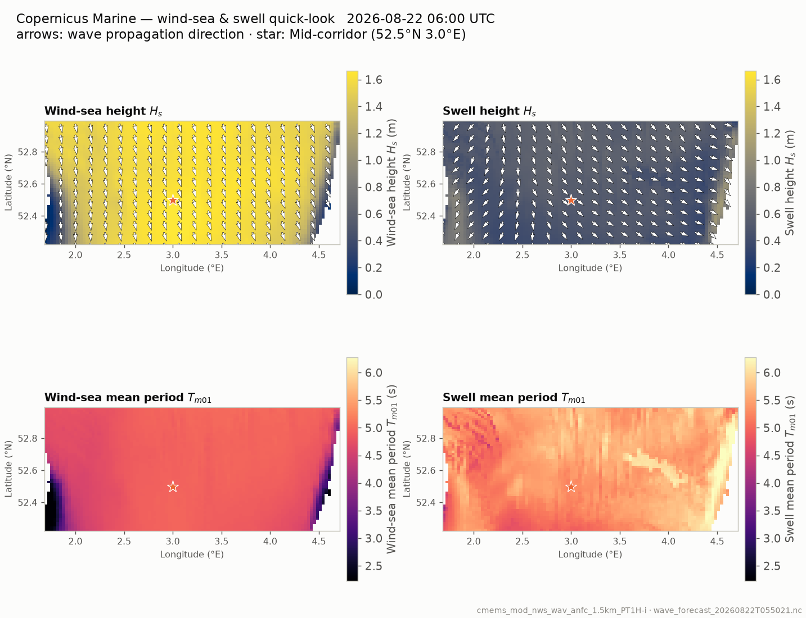
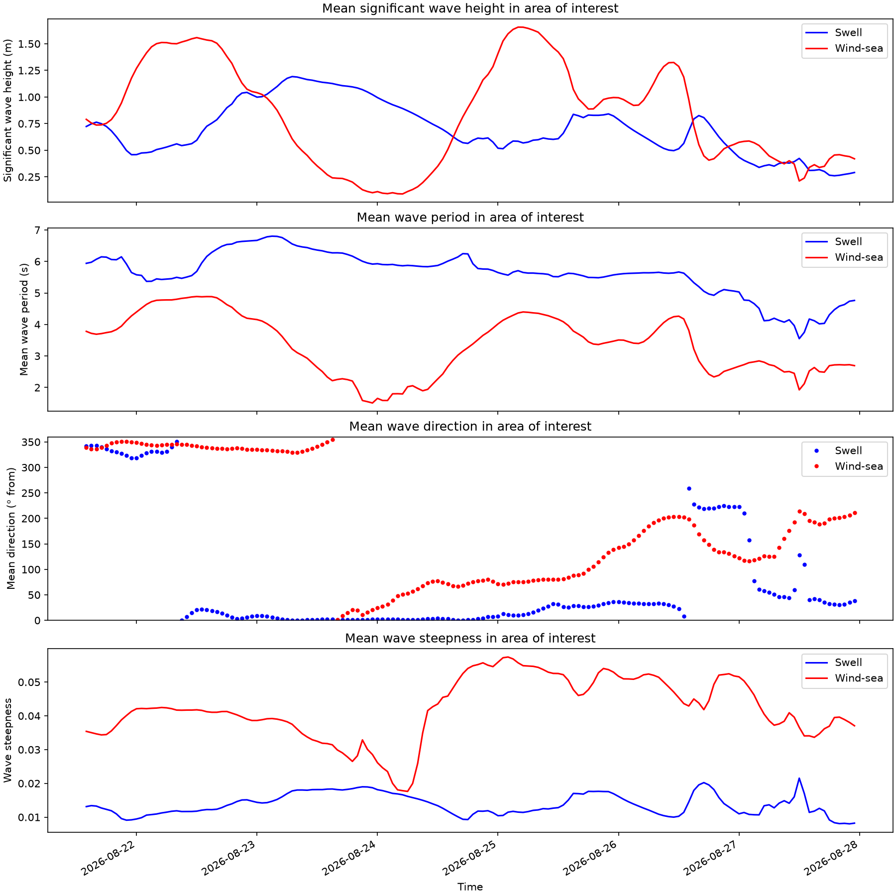

Corridor map — Copernicus Marine forecast
Wind-sea and swell over the crossing area from the Copernicus Marine forecast,
produced with the get-forecast skill. Hidden when the agent ran
without Copernicus credentials.

Wave conditions — area of interest
Sample wave forecast data for the crossing area.
